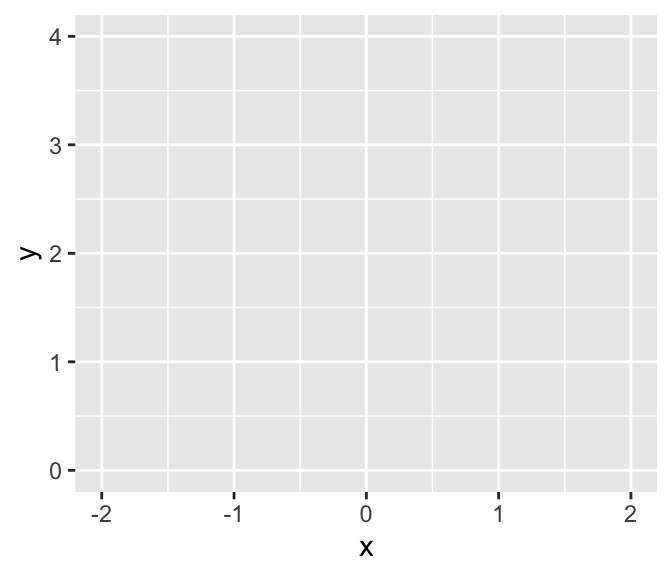
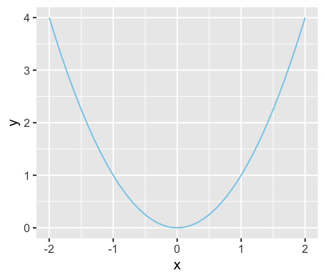
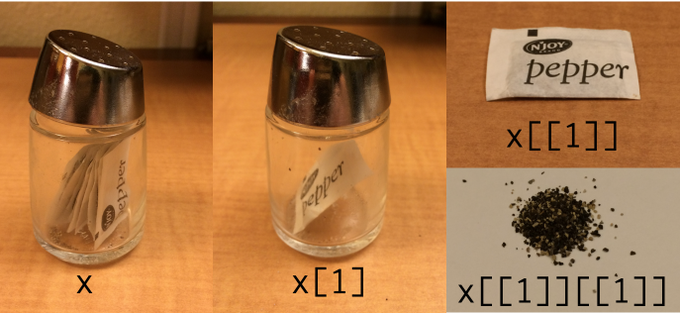

packages <- c("bayesplot", "brms", "coda", "cowplot", "cubelyr", "devtools", "fishualize", "GGally", "ggdist", "ggExtra", "ggforce", "ggmcmc", "ggridges", "ggthemes", "janitor", "lisa", "loo", "palettetown", "patchwork", "psych", "remotes", "rstan", "santoku", "scico", "tidybayes", "tidyverse")
install.packages(packages, dependencies = TRUE)
remotes::install_github("clauswilke/colorblindr")
devtools::install_github("dill/beyonce")
devtools::install_github("ropenscilabs/ochRe")3 The R Programming Language
The material in this chapter is rather dull reading because it basically amounts to a list (although a carefully scaffolded list) of basic commands in R along with illustrative examples. After reading the first few pages and nodding off, you may be tempted to skip ahead, and I wouldn’t blame you. But much of the material in this chapter is crucial, and all of it will eventually be useful, so you should at least skim it all so you know where to return when the topics arise later. (Kruschke, 2015, p. 35)
Most, but not all, of this part of my project will mirror what’s in the text. However, I do add tidyverse-oriented content, such as a small walk through of plotting with the ggplot2 package (Wickham, 2016; Wickham et al., 2022).
3.1 Get the software
The first step to following along with this ebook is to install R on your computer. Go to https://cran.r-project.org/ and follow the instructions, from there. If you get confused, there are any number of brief video tutorials available to lead you through the steps. Just use a search term like “install R.”
If you’re new to R or just curious about its origins, check out Chapter 2 of Peng (2020), History and overview of R. One of the great features about R, which might seem odd or confusing if you’re more used to working with propriety software like SPSS, is a lot of the functionality comes from the add-on packages users develop to make R easier to use. Peng briefly discusses these features in Section 2.7, Design of the R system. I make use of a variety of add-on packages in this project. You can install them all by executing this code block.
Here we load the primary packages for this chapter.
library(tidyverse)
library(cubelyr)3.1.1 A look at RStudio
The R programming language comes with its own basic user interface that is adequate for modest applications. But larger applications become unwieldy in the basic R user interface, and therefore it helps to install a more sophisticated R-friendly editor. There are a number of useful editors available, many of which are free, and they are constantly evolving. At the time of this writing, I recommend RStudio, which can be obtained from [https://rstudio.com/] (p. 35).
I completely agree. R programming is easier with RStudio. However, I should point out that there are other user interfaces available. You can find several alternatives listed here or here.
3.2 A simple example of R in action
Basic arithmetic is straightforward in R.
2 + 3[1] 5Much like Kruschke did in his text, I denote my programming prompts in typewriter font atop a gray background, like this: 2 + 3.
Anyway, algebra is simple in R, too.
x <- 2
x + x[1] 4I don’t tend to save lists of commands in text files. Rather, I almost exclusively work within R Notebook files, which I discuss more fully in Section 3.7. As far as sourcing, I never use the source() approach Kruschke discussed in page 36. I’m not opposed to it. It’s just not my style.
Anyway, behold Figure 3.1.
d <- tibble(x = seq(from = -2, to = 2, by = 0.1)) |>
mutate(y = x^2)
ggplot(data = d,
aes(x = x, y = y)) +
geom_line(color = "skyblue") +
theme(panel.grid = element_blank())If you’re new to the tidyverse and/or making figures with ggplot2, it’s worthwhile to walk that code out. With the first line, library(tidyverse), we opened up the core packages within the tidyverse, which are:
- ggplot2 (Wickham, 2016; Wickham et al., 2022),
- dplyr (Wickham et al., 2020),
- tidyr (Wickham & Henry, 2020),
- readr (Wickham et al., 2018),
- purrr (Henry & Wickham, 2020),
- tibble (Müller & Wickham, 2022),
- stringr (Wickham, 2019), and
- forcats (Wickham, 2020b).
With the few lines,
d <- tibble(x = seq(from = -2, to = 2, by = 0.1)) |>
mutate(y = x^2) we made our tibble. In R, data frames are one of the primary types of data objects (see Section 3.4.4, below). We’ll make extensive use of data frames in this project. Tibbles are a particular type of data frame, which you might learn more about in the tibbles section of Grolemund and Wickham’s (2017) R4DS. With those first two lines, we determined what the name of our tibble would be, d, and made the first column, x.
Note the |> operator at the end of the second line. In prose, we call that the pipe. As explained in Section 4.3 of R4DS2, “a good way to pronounce |> when reading code is ‘then.’” So in words, the those first two lines indicate “Make an object, d, which is a tibble with a variable, x, defined by the seq() function, then…”
In the portion after then (i.e., the |>), we changed d. The dplyr::mutate() function let us add another variable, y, which is a function of our first variable, x.
With the next 4 lines of code, we made our plot. When plotting with ggplot2, the first line is always with the ggplot() function. This is where you typically tell ggplot2 what data object you’re using–which must be a data frame or tibble–and what variables you want on your axes. The interesting thing about ggplot2 is that the code is modular. So if we only coded the ggplot() portion, we’d get:
ggplot(data = d,
aes(x = x, y = y))
Although ggplot2 knows which variables to put on which axes, it has no idea how we’d like to express the data. The result is an empty coordinate system. The next line of code is the main event. With geom_line() we told ggplot2 to connect the data points with a line. With the color argument, we made that line "skyblue". [Here’s a great list of the named colors available in ggplot2.] Also, notice the + operator at the end of the ggplot() function. With ggplot2, you add functions by placing the + operator on the right of the end of one function, which will then append the next function.
ggplot(data = d,
aes(x = x, y = y)) +
geom_line(color = "skyblue")
Personally, I’m not a fan of grid lines. They occasionally have their place and I do use them from time to time. But on the whole, I prefer to omit them from my plots. The final theme() function allowed me to do so.
ggplot(data = d,
aes(x = x, y = y)) +
geom_line(color = "skyblue") +
theme(panel.grid = element_blank())
Chapter 3 of R4DS is a great introduction to plotting with ggplot2. If you want to dive deeper, see the references at the bottom of this page. And of course, you might read up in Wickham’s (2016) ggplot2: Elegant graphics for data analysis.
3.2.1 Get the programs used with this book
This subtitle has a double meaning, here. Yes, you should probably get Kruschke’s scripts from the book’s website, https://sites.google.com/site/doingbayesiandataanalysis/. You may have noticed this already, but unlike in Kruschke’s text, I will usually show all my code. Indeed, the purpose of my project is to make coding these kinds of models and visualizations easier. But if you’re ever curious, you can always find my script files in their naked form at https://github.com/ASKurz/Doing-Bayesian-Data-Analysis-in-brms-and-the-tidyverse. For example, the raw file for this very chapter is at https://github.com/ASKurz/Doing-Bayesian-Data-Analysis-in-brms-and-the-tidyverse/blob/master/03.Rmd.
Later in this subsection, Kruschke mentioned working directories. If you don’t know what your current working directory is, just execute getwd(). I’ll have more to say on this topic later on when I make my pitch for RStudio projects in Section 3.7.2.
3.3 Basic commands and operators in R
In addition to the resource link Kruschke provided in the text, Grolemund and Wickham’s R4DS is an excellent general introduction to the kinds of R functions you’ll want to succeed with your data analysis. Other than that, I’ve learned the most when I had a specific data problem to solve and then sought out the specific code/techniques required to solve it. If already have your own data or can get your hands on some sexy data, learn these techniques by playing around with them. This isn’t the time to worry about rigor, preregistration, or all of that. This is time to play.
3.3.1 Getting help in R
As with plot() you can learn more about the ggplot() function with ?.
?ggplothelp.start() can be nice, too.
help.start()??geom_line() can help us learn more about the geom_line() function.
??geom_line()Quite frankly, a bit part of becoming a successful R user is learning how to get help, online. In addition to the methods, above, type in the name of your function of interest in your favorite web browser. For example, If I wanted to learn more about the geom_line() function, I’d literally do a web search for “geom_line()”. In my case, the first search results when doing so was https://ggplot2.tidyverse.org/reference/geom_path.html, which is a nicely-formatted official reference page put out by the ggplot2 team.
3.3.2 Arithmetic and logical operators
With arithmetic, the order of operations is: power first, then multiplication, then addition.
1 + 2 * 3^2[1] 19With parentheses, you can force addition before multiplication.
(1 + 2) * 3^2[1] 27Operations inside parentheses get done before power operations.
(1 + 2 * 3)^2[1] 49One can nest parentheses.
((1 + 2) * 3)^2[1] 81?SyntaxWe can use R to perform a variety of logical tests, such as negation.
!TRUE[1] FALSEWe can do conjunction.
TRUE & FALSE[1] FALSEAnd we can do disjunction.
TRUE | FALSE[1] TRUEConjunction has precedence over disjunction.
TRUE | TRUE & FALSE[1] TRUEHowever, with parentheses we can force disjunction first.
(TRUE | TRUE) & FALSE[1] FALSE3.3.3 Assignment, relational operators, and tests of equality
In contrast to Kruschke’s preference, I will use the arrow operator, <-, to assign values to named variables.1
x = 1
x <- 1Yep, this ain’t normal math.
(x = 1)[1] 1(x = x + 1)[1] 2Here we use == to test for equality.
(x = 2)[1] 2x == 2[1] TRUEUsing !=, we can check whether the value of x is NOT equal to 3.
x != 3[1] TRUEWe can use < to check whether the value of x is less than 3.
x < 3[1] TRUESimilarly, we can use > to check whether the value of x is greater than 3.
x > 3[1] FALSEThis normal use of the <- operator
x <- 3is not the same as
x < - 3[1] FALSEThe limited precision of a computer’s memory can lead to odd results.
x <- 0.5 - 0.3
y <- 0.3 - 0.1Although mathematically TRUE, this is FALSE for limited precision.
x == y[1] FALSEHowever, they are equal up to the precision of a computer.
all.equal(x, y)[1] TRUE3.4 Variable types
If you’d like to learn more about the differences among vectors, matrices, lists, data frames and so on, you might check out Roger Peng’s (2020) R Programming for data science, Chapter 4.
3.4.1 Vector
“A vector is simply an ordered list of elements of the same type” (p. 42).
3.4.1.1 The combine function
The combine function is c(), which makes vectors. Here we’ll first make an unnamed vector. Then we’ll sve that vector as x.
c(2.718, 3.14, 1.414)[1] 2.718 3.140 1.414x <- c(2.718, 3.14, 1.414)You’ll note the equivalence.
x == c(2.718, 3.14, 1.414)[1] TRUE TRUE TRUEThis leads to the next subsection.
3.4.1.2 Component-by-component vector operations
We can multiply two vectors, component by component.
c(1, 2, 3) * c(7, 6, 5)[1] 7 12 15If you have a sole number, a scalar, you can multiply an entire vector by it like:
2 * c(1, 2, 3)[1] 2 4 6which is a more compact way to perform this.
c(2, 2, 2) * c(1, 2, 3)[1] 2 4 6The same sensibilities hold for other operations, such as addition.
2 + c(1, 2, 3)[1] 3 4 53.4.1.3 The colon operator and sequence function
The colon operator, :, is a handy way to make integer sequences. Here we use it to serially list the inters from 4 to 7.
4:7[1] 4 5 6 7The colon operator has precedence over addition.
2 + 3:6[1] 5 6 7 8Parentheses override default precedence.
(2 + 3):6 [1] 5 6The power operator has precedence over the colon operator.
1:3^2[1] 1 2 3 4 5 6 7 8 9And parentheses override default precedence.
(1:3)^2[1] 1 4 9The seq() function is quite handy. If you don’t specify the length of the output, it will figure that out the logical consequence of the other arguments.
seq(from = 0, to = 3, by = 0.5)[1] 0.0 0.5 1.0 1.5 2.0 2.5 3.0This sequence won’t exceed to = 3.
seq(from = 0, to = 3, by = 0.5001) [1] 0.0000 0.5001 1.0002 1.5003 2.0004 2.5005In each of the following examples, we’ll omit one of the core seq() arguments: from, to, by, and length.out. Here we do not define the end point.
seq(from = 0, by = 0.5, length.out = 7)[1] 0.0 0.5 1.0 1.5 2.0 2.5 3.0This time we fail to define the increment.
seq(from = 0, to = 3, length.out = 7)[1] 0.0 0.5 1.0 1.5 2.0 2.5 3.0And this time we omit a starting point.
seq(to = 3, by = 0.5, length.out = 7)[1] 0.0 0.5 1.0 1.5 2.0 2.5 3.0In this ebook, I will always explicitly name my arguments within seq().
3.4.1.4 The replicate function
We’ll define our pre-replication vector with the <- operator.
abc <- c("A", "B", "C")With the times argument, we repeat the vector as a unit with the rep() function.
rep(abc, times = 2)[1] "A" "B" "C" "A" "B" "C"But if we mix the times argument with c(), we can repeat individual components of abc differently.
rep(abc, times = c(4, 2, 1))[1] "A" "A" "A" "A" "B" "B" "C"With the each argument, we repeat the individual components of abc one at a time.
rep(abc, each = 2)[1] "A" "A" "B" "B" "C" "C"And you can even combine each and length, repeating each element until the length requirement has been fulfilled.
rep(abc, each = 2, length = 10) [1] "A" "A" "B" "B" "C" "C" "A" "A" "B" "B"You can also combine each and times.
rep(abc, each = 2, times = 3) [1] "A" "A" "B" "B" "C" "C" "A" "A" "B" "B" "C" "C" "A" "A" "B" "B" "C" "C"I tend to do things like the above as two separate steps. One way to do so is by nesting one rep() function within another.
rep(rep(abc, each = 2),
times = 3) [1] "A" "A" "B" "B" "C" "C" "A" "A" "B" "B" "C" "C" "A" "A" "B" "B" "C" "C"As Kruschke points out, this can look confusing.
rep(abc, each = 2, times = c(1, 2, 3, 1, 2, 3)) [1] "A" "A" "A" "B" "B" "B" "B" "C" "C" "C" "C" "C"But breaking the results up into two steps might be easier to understand,
rep(rep(abc, each = 2),
times = c(1, 2, 3, 1, 2, 3)) [1] "A" "A" "A" "B" "B" "B" "B" "C" "C" "C" "C" "C"And especially earlier in my R career, it helped quite a bit to break operation sequences like this up by saving and assessing the intermediary steps.
step_1 <- rep(abc, each = 2)
step_1[1] "A" "A" "B" "B" "C" "C"rep(step_1, times = c(1, 2, 3, 1, 2, 3)) [1] "A" "A" "A" "B" "B" "B" "B" "C" "C" "C" "C" "C"3.4.1.5 Getting at elements of a vector
Behold our exemplar vector, x.
x <- c(2.718, 3.14, 1.414, 47405)The straightforward way to extract the second and fourth elements is with a combination of brackets, [], and c().
x[c(2, 4)][1] 3.14 47405.00Or you might use reverse logic and omit the first and third elements.
x[c(-1, -3 )][1] 3.14 47405.00It’s handy to know that T is a stand in for TRUE and F is a stand in for FALSE. You’ll probably notice I use the abbreviations most of the time.
x[c(F, T, F, T)][1] 3.14 47405.00The names() function makes it easy to name the components of a vector.
names(x) <- c("e", "pi", "sqrt2", "zipcode")
x e pi sqrt2 zipcode
2.718 3.140 1.414 47405.000 Now we can call the components with their names.
x[c("pi", "zipcode")] pi zipcode
3.14 47405.00 Once we start working with summaries from our Bayesian models, we’ll use this trick a lot.
Here’s Kruschke’s review:
# Define a vector
x <- c(2.718, 3.14, 1.414, 47405)
# Name the components
names(x) <- c("e", "pi", "sqrt2", "zipcode")
# You can indicate which elements you'd like to include
x[c(2, 4)] pi zipcode
3.14 47405.00 # You can decide which to exclude
x[c(-1, -3)] pi zipcode
3.14 47405.00 # Or you can use logical tests
x[c(F, T, F, T)] pi zipcode
3.14 47405.00 # And you can use the names themselves
x[c("pi", "zipcode")] pi zipcode
3.14 47405.00 3.4.2 Factor
“Factors are a type of vector in R for which the elements are categorical values that could also be ordered. The values are stored internally as integers with labeled levels” (p. 46, emphasis in the original).
Here are our five-person socioeconomic status data.
x <- c("high", "medium", "low", "high", "medium")
x[1] "high" "medium" "low" "high" "medium"The factor() function turns them into a factor, which will return the levels when called.
xf <- factor(x)
xf[1] high medium low high medium
Levels: high low mediumHere are the factor levels as numerals.
as.numeric(xf)[1] 1 3 2 1 3With the levels and ordered arguments, we can order the factor elements.
xfo <- factor(x, levels = c("low", "medium", "high"), ordered = T)
xfo[1] high medium low high medium
Levels: low < medium < highNow “high” is a larger integer.
as.numeric(xfo)[1] 3 2 1 3 2We’ve already specified xf.
xf[1] high medium low high medium
Levels: high low mediumAnd we know how it’s been coded numerically.
as.numeric(xf)[1] 1 3 2 1 3We can have levels and labels.
xfol <- factor(x,
levels = c("low", "medium", "high"), ordered = T,
labels = c("Bottom SES", "Middle SES", "Top SES"))
xfol[1] Top SES Middle SES Bottom SES Top SES Middle SES
Levels: Bottom SES < Middle SES < Top SESFactors can come in very handy when modeling with certain kinds of categorical variables, as in Chapter 22, or when arranging elements within a plot.
3.4.3 Matrix and array
Kruschke uses these more often than I do. I’m more of a vector and data frame kinda guy. Even so, here’s an example of a matrix.
matrix(1:6, ncol = 3) [,1] [,2] [,3]
[1,] 1 3 5
[2,] 2 4 6We can get the same thing using nrow.
matrix(1:6, nrow = 2) [,1] [,2] [,3]
[1,] 1 3 5
[2,] 2 4 6Note how the numbers got ordered by rows within each column? We can specify them to be ordered across columns, first.
matrix(1:6, nrow = 2, byrow = T) [,1] [,2] [,3]
[1,] 1 2 3
[2,] 4 5 6We can name the dimensions. I’m not completely consistent, but I generally follow The tidyverse style guide (Wickham, 2020d) for naming my R objects and their elements. From Section 2.1, we read
Variable and function names should use only lowercase letters, numbers, and
_. Use underscores (_) (so called snake case) to separate words within a name.
By those sensibilities, we’ll name our rows and columns like this.
matrix(1:6,
nrow = 2,
dimnames = list(TheRowDimName = c("row_1_name", "row_2_name"),
TheColDimName = c("col_1_name", "col_2_name", "col_3_name"))) TheColDimName
TheRowDimName col_1_name col_2_name col_3_name
row_1_name 1 3 5
row_2_name 2 4 6You’ve also probably noticed that I “always put a space after a comma, never before, just like in regular English,” as well as “put a space before and after = when naming arguments in function calls.” IMO, this makes code easier to read. You do you.
We’ll name our matrix x.
x <- matrix(1:6,
nrow = 2,
dimnames = list(TheRowDimName = c("row_1_name", "row_2_name"),
TheColDimName = c("col_1_name", "col_2_name", "col_3_name")))Since there are 2 dimensions, we’ll subset with two dimensions. Numerical indices work.
x[2, 3][1] 6Row and column names work, too. Just make sure to use quotation marks, "", for those.
x["row_2_name", "col_3_name"][1] 6Here we specify the range of columns to include.
x[2, 1:3]col_1_name col_2_name col_3_name
2 4 6 Leaving that argument blank returns them all.
x[2, ]col_1_name col_2_name col_3_name
2 4 6 And leaving the row index blank returns all row values within the specified column(s).
x[, 3]row_1_name row_2_name
5 6 Mind your commas! This produces the second row, returned as a vector.
x[2, ]col_1_name col_2_name col_3_name
2 4 6 This returns both rows of the 2nd column.
x[, 2]row_1_name row_2_name
3 4 Leaving out the comma will return the numbered element.
x[2][1] 2It’ll be important in your brms career to have a sense of 3-dimensional arrays. Several brms convenience functions often return them (e.g., ranef() in multilevel models).
a <- array(1:24, dim = c(3, 4, 2), # 3 rows, 4 columns, 2 layers
dimnames = list(RowDimName = c("r1", "r2", "r3"),
ColDimName = c("c1", "c2", "c3", "c4"),
LayDimName = c("l1", "l2")))
a, , LayDimName = l1
ColDimName
RowDimName c1 c2 c3 c4
r1 1 4 7 10
r2 2 5 8 11
r3 3 6 9 12
, , LayDimName = l2
ColDimName
RowDimName c1 c2 c3 c4
r1 13 16 19 22
r2 14 17 20 23
r3 15 18 21 24Since these have 3 dimensions, you have to use 3-dimensional indexing. As with 2-dimensional objects, leaving the indices for a dimension blank will return all elements within that dimension. For example, this code returns all columns of r3 and l2, as a vector.
a["r3", , "l2"]c1 c2 c3 c4
15 18 21 24 And this code returns all layers of r3 and c4, as a vector.
a["r3", "c4", ]l1 l2
12 24 This whole topic of subsetting–whether from matrices and arrays, or from data frames and tibbles–can be confusing. For more practice and clarification, you might check out Peng’s Chapter 9, Subsetting R objects.
3.4.4 List and data frame
“The list structure is a generic vector in which components can be of different types, and named” (p. 51). Here’s my_list.
my_list <- list(
"a" = 1:3,
"b" = matrix(1:6, nrow = 2),
"c" = "Hello, world.")
my_list$a
[1] 1 2 3
$b
[,1] [,2] [,3]
[1,] 1 3 5
[2,] 2 4 6
$c
[1] "Hello, world."To return the contents of the a portion of my_list, just execute this.
my_list$a[1] 1 2 3We can index further within a.
my_list$a[2][1] 2To return the contents of the first item in our list with the double bracket, [[]], do:
my_list[[1]][1] 1 2 3You can index further to return only the second element of the first list item.
my_list[[1]][2][1] 2But double brackets, [][], are no good, here.
my_list[1][2]$<NA>
NULLTo learn more, Jenny Bryan has a great talk discussing the role of lists within data wrangling. There’s also this classic pic from Hadley Wickham:

But here’s a data frame.
d <- data.frame(integers = 1:3,
number_names = c("one", "two", "three"))
d integers number_names
1 1 one
2 2 two
3 3 threeWith data frames, we can continue indexing with the $ operator.
d$number_names[1] "one" "two" "three"We can also use the double bracket.
d[[2]][1] "one" "two" "three"Notice how the single bracket with no comma indexes columns rather than rows.
d[2] number_names
1 one
2 two
3 threeBut adding the comma returns the factor-level information when indexing columns.
d[, 2][1] "one" "two" "three"It works a touch differently when indexing by row.
d[2, ] integers number_names
2 2 twoLet’s try with a tibble, instead.
t <- tibble(integers = 1:3,
number_names = c("one", "two", "three"))
t# A tibble: 3 × 2
integers number_names
<int> <chr>
1 1 one
2 2 two
3 3 three One difference is that tibbles default to assigning text columns as character strings rather than factors. Another difference occurs when printing large data frames versus large tibbles. Tibbles yield more compact glimpses. For more, check out R4DS Chapter 10.
It’s also worthwhile pointing out that within the tidyverse, you can pull out a specific column with the select() function. Here we select number_names.
t |>
select(number_names)# A tibble: 3 × 1
number_names
<chr>
1 one
2 two
3 three Go here learn more about select().
3.5 Loading and saving data
3.5.1 The read.csv read_csv() and read.table read_table() functions
Although read.csv() is the default CSV reader in R, the read_csv() function from the readr package (i.e., one of the core tidyverse packages) is a new alternative. In comparison to base R’s read.csv(), readr::read_csv() is faster and returns tibbles (as opposed to data frames with read.csv()). The same general points hold for base R’s read.table() versus readr::read_table().
Using Kruschke’s HGN.csv example, we’d load the CSV with read_csv() like this.
hgn <- read_csv("data.R/HGN.csv")Note again that read_csv() defaults to returning columns with character information as characters, not factors.
hgn$Hair[1] "black" "brown" "blond" "black" "black" "red" "brown"See? As a character variable, Hair no longer has factor level information. But if you knew you wanted to treat Hair as a factor, you could easily convert it with dplyr::mutate().
hgn <- hgn |>
mutate(Hair = factor(Hair))
hgn$Hair[1] black brown blond black black red brown
Levels: black blond brown redAnd here’s a tidyverse way to reorder the levels for the Hair factor.
hgn <- hgn |>
mutate(Hair = factor(Hair, levels = c("red", "blond", "brown", "black")))
hgn$Hair[1] black brown blond black black red brown
Levels: red blond brown blackas.numeric(hgn$Hair)[1] 4 3 2 4 4 1 3Since we imported hgn with read_csv(), the Name column is already a character vector, which we can verify with the str() function.
hgn$Name |> str() chr [1:7] "Alex" "Betty" "Carla" "Diane" "Edward" "Frank" "Gabrielle"Note how using as.vector() did nothing in our case. Name was already a character vector.
hgn$Name |>
as.vector() |>
str() chr [1:7] "Alex" "Betty" "Carla" "Diane" "Edward" "Frank" "Gabrielle"The Group column was imported as composed of integers.
hgn$Group |> str() num [1:7] 1 1 1 2 2 2 2Switching Group to a factor is easy enough.
hgn <- hgn |>
mutate(Group = factor(Group))
hgn$Group[1] 1 1 1 2 2 2 2
Levels: 1 23.5.2 Saving data from R
The readr package has a write_csv() function, too. The arguments are as follows: write_csv(x, file, na = "NA", append = FALSE, col_names = !append, quote_escape = "double", eol = "\n"). Learn more by executing ?write_csv. Saving hgn in your working directory is as easy as:
write_csv(hgn, "hgn.csv")You could also use save().
save(hgn, file = "hgn.Rdata" )Once we start fitting Bayesian models, this method will be an important way to save the results of those models.
The load() function is simple.
load("hgn.Rdata" )The ls() function works very much the same way as the more verbosely-named objects() function.
ls() [1] "a" "abc" "d" "hgn" "my_list" "step_1" "t" "x" "xf" "xfo" "xfol" "y" 3.6 Some utility functions
“A function is a process that takes some input, called the arguments, and produces some output, called the value” (p. 56, emphasis in the original).
# This is a more compact way to replicate 100 1's, 200 2's, and 300 3's
x <- rep(1:3, times = c(100, 200, 300))
summary(x) Min. 1st Qu. Median Mean 3rd Qu. Max.
1.000 2.000 2.500 2.333 3.000 3.000 We can use the pipe to convert and then summarize x.
x |>
factor() |>
summary() 1 2 3
100 200 300 The head() and tail() functions are quite useful.
head(x)[1] 1 1 1 1 1 1tail(x)[1] 3 3 3 3 3 3I used head() a lot.
Within the tidyverse, the slice() function serves a similar role. In order to use slice(), we’ll want to convert x, which is just a vector of integers, into a data frame. Then we’ll use slice() to return a subset of the rows.
x <- x |>
data.frame()
x |>
slice(1:6) x
1 1
2 1
3 1
4 1
5 1
6 1So that was analogous to what we accomplished with head(). Here’s the analogue to tail().
x |>
slice(595:600) x
1 3
2 3
3 3
4 3
5 3
6 3The downside of that code was we had to do the math to determine that \(600 - 6 = 595\) in order to get the last six rows, as returned by tail(). A more general approach is to use n(), which will return the total number of rows in the tibble.
x |>
slice((n() - 6):n()) x
1 3
2 3
3 3
4 3
5 3
6 3
7 3To unpack (n() - 6):n(), because n() = 600, (n() - 6) = 600 - 6 = 595. Therefore (n() - 6):n() was equivalent to having coded 595:600. Instead of having to do the math ourselves, n() did it for us. It’s often easier to just go with head() or tail(). But the advantage of this more general approach is that it allows one take more complicated slices of the data, such as returning the first three and last three rows.
x |>
slice(c(1:3, (n() - 3):n())) x
1 1
2 1
3 1
4 3
5 3
6 3
7 3We’ve already used the handy str() function a bit. It’s also nice to know that tidyverse::glimpse() performs a similar function.
x |> str()'data.frame': 600 obs. of 1 variable:
$ x: int 1 1 1 1 1 1 1 1 1 1 ...x |> glimpse()Rows: 600
Columns: 1
$ x <int> 1, 1, 1, 1, 1, 1, 1, 1, 1, 1, 1, 1, 1, 1, 1, 1, 1, 1, 1, 1, 1, 1, 1, 1, 1, 1, 1, 1, 1, 1, 1, 1, 1, 1, 1, 1, 1, 1, 1, 1…Within the tidyverse, we’d use group_by() and then summarize() as alternatives to the base R aggregate() function. With group_by() we group the observations first by Hair and then by Gender within Hair. After that, we summarize the groups by taking the median() values of their Number.
hgn |>
group_by(Hair, Gender) |>
summarize(median = median(Number))# A tibble: 5 × 3
# Groups: Hair [4]
Hair Gender median
<fct> <chr> <dbl>
1 red M 7
2 blond F 3
3 brown F 7
4 black F 7
5 black M 1.5One of the nice things about this workflow is that the code reads somewhat like how we’d explain what we were doing. We, in effect, told R to Take hgn, then group the data by Hair and Gender within Hair, and then summarize() those groups by their median() Number values. There’s also the nice quality that we don’t have to continually tell R where the data are coming from the way the aggregate() function required Kruschke to prefix each of his variables with HGNdf$. We also didn’t have to explicitly rename the output columns the way Kruschke had to.
I’m not aware that our group_by() |> summarize() workflow has a formula format the way aggregate() does.
To count how many levels we had in a grouping factor, we’d use the n() function in summarize().
hgn |>
group_by(Hair, Gender) |>
summarize(n = n())# A tibble: 5 × 3
# Groups: Hair [4]
Hair Gender n
<fct> <chr> <int>
1 red M 1
2 blond F 1
3 brown F 2
4 black F 1
5 black M 2Alternatively, we could switch out the group_by() and summarize() lines with count().
hgn |>
count(Hair, Gender)# A tibble: 5 × 3
Hair Gender n
<fct> <chr> <int>
1 red M 1
2 blond F 1
3 brown F 2
4 black F 1
5 black M 2We could then use spread() to convert that output to a format similar to Kruschke’s table of counts.
hgn |>
count(Hair, Gender) |>
spread(key = Hair, value = n)# A tibble: 2 × 5
Gender red blond brown black
<chr> <int> <int> <int> <int>
1 F NA 1 2 1
2 M 1 NA NA 2With this method, the NAs are stand-ins for 0’s.
a, , LayDimName = l1
ColDimName
RowDimName c1 c2 c3 c4
r1 1 4 7 10
r2 2 5 8 11
r3 3 6 9 12
, , LayDimName = l2
ColDimName
RowDimName c1 c2 c3 c4
r1 13 16 19 22
r2 14 17 20 23
r3 15 18 21 24apply() is part of a family of functions that offer a wide array of uses. You can learn more about the apply() family here or here.
apply(a, MARGIN = c(2, 3), FUN = sum) LayDimName
ColDimName l1 l2
c1 6 42
c2 15 51
c3 24 60
c4 33 69Here’s a.
a, , LayDimName = l1
ColDimName
RowDimName c1 c2 c3 c4
r1 1 4 7 10
r2 2 5 8 11
r3 3 6 9 12
, , LayDimName = l2
ColDimName
RowDimName c1 c2 c3 c4
r1 13 16 19 22
r2 14 17 20 23
r3 15 18 21 24The reshape2 package (Wickham, 2007, 2020c) was a precursor to the tidyr package (i.e., one of the core tidyverse packages). The reshape2::melt() function is a quick way to transform the 3-dimensional a matrix into a tidy data frame.
a |>
reshape2::melt() RowDimName ColDimName LayDimName value
1 r1 c1 l1 1
2 r2 c1 l1 2
3 r3 c1 l1 3
4 r1 c2 l1 4
5 r2 c2 l1 5
6 r3 c2 l1 6
7 r1 c3 l1 7
8 r2 c3 l1 8
9 r3 c3 l1 9
10 r1 c4 l1 10
11 r2 c4 l1 11
12 r3 c4 l1 12
13 r1 c1 l2 13
14 r2 c1 l2 14
15 r3 c1 l2 15
16 r1 c2 l2 16
17 r2 c2 l2 17
18 r3 c2 l2 18
19 r1 c3 l2 19
20 r2 c3 l2 20
21 r3 c3 l2 21
22 r1 c4 l2 22
23 r2 c4 l2 23
24 r3 c4 l2 24We have an alternative if you wanted to stay within the tidyverse. To my knowledge, the fastest way to make the transformation is to first use as.tbl_cube() and follow that up with as_tibble(). The as.tbl_cube() function will convert the a matrix into a tbl_cube. We will use the met_name argument to determine the name of the measure assessed in the data. Since the default is for as.tbl_cube() to name the measure name as ., it seemed value was a more descriptive choice. We’ll then use the as_tibble() function to convert our tbl_cube object into a tidy tibble.
a |>
as.tbl_cube(met_name = "value") |>
as_tibble()# A tibble: 24 × 4
RowDimName ColDimName LayDimName value
<chr> <chr> <chr> <int>
1 r1 c1 l1 1
2 r2 c1 l1 2
3 r3 c1 l1 3
4 r1 c2 l1 4
5 r2 c2 l1 5
6 r3 c2 l1 6
7 r1 c3 l1 7
8 r2 c3 l1 8
9 r3 c3 l1 9
10 r1 c4 l1 10
# ℹ 14 more rowsNotice how the first three columns are returned as characters instead of factors. If you really wanted those to be factors, you could always follow up the code with mutate_if(is.character, as.factor). Also notice that we gained access to the as.tbl_cube() function by loading the cubelyr package (Wickham, 2020a). Though as.tbl_cube() was available in earlier versions of dplyr (one of the core packages in the tidyverse), it was removed in the version 1.0.0 update and is now available via cubelyr.
3.7 Programming in R
It’s worthy to note that this project was done with R Markdown, which is an alternative to an R script. As Grolemund and Wickham point out
R Markdown integrates a number of R packages and external tools. This means that help is, by-and-large, not available through ?. Instead, as you work through this chapter, and use R Markdown in the future, keep these resources close to hand:
R Markdown Cheat Sheet: Help > Cheatsheets > R Markdown Cheat Sheet,
R Markdown Reference Guide: Help > Cheatsheets > R Markdown Reference Guide.
Both cheatsheets are also available at https://rstudio.com/resources/cheatsheets/.
I also strongly recommend checking out R Notebooks, which is a kind of R Markdown document but with a few bells a whistles that make it more useful for working scientists. You can learn more about it here and here. And for a more comprehensive overview, check out Xie, Allaire, and Grolemund’s (2022) R markdown: The definitive guide.
3.7.1 Variable names in R
Kruschke prefers to use camelBack notation for his variable and function names. Though I initially hated it, I largely use snake_case. It seems easier to read_prose_in_snake_case than it is to readProseInCamelBack. To each their own.
3.7.2 Running a program
I do most of my data analyses using RStudio projects. In short, RStudio projects provide a handy way to organize your files within a given project, be it an analysis for a scientific paper, an ebook, or even a personal website. See R4DS Chapter 8 for a nice overview on working directories within the context of an RStudio project. I didn’t really get it, at first. But after using RStudio projects for a couple days, I was hooked. I bet you will be, too.
3.7.3 Programming a function
Here’s our simple a_sq_plus_b function.
a_sq_plus_b <- function(a, b = 1) {
c <- a^2 + b
return(c)
}If you explicitly denote your arguments, everything works fine.
a_sq_plus_b(a = 3, b = 2)[1] 11Keep things explicit and you can switch up the order of the arguments.
a_sq_plus_b(b = 2, a = 3)[1] 11But here’s what happens when you are less explicit.
# This
a_sq_plus_b(3, 2)[1] 11# is not the same as this
a_sq_plus_b(2, 3)[1] 7Since we gave b a default value, we can be really lazy.
a_sq_plus_b(a = 2)[1] 5But we can’t be lazy with a. This
a_sq_plus_b(b = 1)yielded this warning on my computer: “Error in a_sq_plus_b(b = 1) : argument”a” is missing, with no default”.
If we’re completely lazy, a_sq_plus_b() presumes our sole input value is for the a argument and it uses the default value of 1 for b.
a_sq_plus_b(2)[1] 5The lesson is important because it’s good practice to familiarize yourself with the defaults of the functions you use in statistics and data analysis, more generally.
If you haven’t done it much, before, programming your own functions can feel like a superpower. It’s a good idea to get comfortable with the basics. I’ve found it really helps when I’m working on models for real-world scientific projects. For more practice, Check out R4DS, Chapter 19, or R programming for data science, Chapter 14.
3.7.4 Conditions and loops
Before we start with if() and else(), we need to first define a value for x.
x <- 5Here’s Kruschke’s initial if() and else() example.
if (x <= 3) { # If `x` is less than or equal to 3
show("small") # Display the word "small"
} else { # Otherwise
show("big") # Display the word "big"
} # End of 'else' clause[1] "big"Change the value you’ve assigned to x to see what might happen.
As in the text, if you try run this version of the code where else starts in its own line, you’ll get an error.
if (x <= 3) {show("small")}
else {show("big")}Error in parse(text = input): <text>:2:1: unexpected 'else'
1: if (x <= 3) {show("small")}
2: else
^Use the syntax formatting from the first code block, instead.
Here we use a for loop.
for (count_down in 5:1) {
show(count_down)
}[1] 5
[1] 4
[1] 3
[1] 2
[1] 1And again.
for (note in c("do", "re", "mi")) {
show(note)
}[1] "do"
[1] "re"
[1] "mi"It’s also useful to understand how to use the ifelse() function within the context of a data frame. Recall how x is a data frame.
x <- tibble(x = 1:5)
x# A tibble: 5 × 1
x
<int>
1 1
2 2
3 3
4 4
5 5We can use the mutate() function to make a new variable, size, which is itself a function of the original variable, x. We’ll use the ifelse() function to return “small” if x <= 3, but to return “big” otherwise.
x |>
mutate(size = ifelse(x <= 3, "small", "big"))# A tibble: 5 × 2
x size
<int> <chr>
1 1 small
2 2 small
3 3 small
4 4 big
5 5 big You should also know there’s a dplyr alternative, called if_else(). It works quite similarly, but is stricter about type consistency. If you ever get into a situation where you need to do many ifelse() statements or a many-layered ifelse() statement, you might check out dplyr::case_when(). We’ll get some practice with case_when() in the next chapter.
3.7.5 Measuring processing time
This will be nontrivial to consider in your Bayesian career. Here’s the loop.
start_time <- proc.time()
y <- vector(mode = "numeric", length = 1.0E6)
for (i in 1:1.0E6) {y[i] <- log(i)}
stop_time <- proc.time()
elapsed_time_loop <- stop_time - start_time
show(elapsed_time_loop) user system elapsed
0.032 0.001 0.034 Now we use a vector.
start_time <- proc.time()
y <- log(1:1.0E6)
stop_time <- proc.time()
elapsed_time_vector <- stop_time - start_time
show(elapsed_time_vector) user system elapsed
0.004 0.001 0.005 Here we compare the two times.
elapsed_time_vector[1] / elapsed_time_loop[1]user.self
0.125 For my computer, the vectorized approach took about 12.5% the time the loop approach did. When using R, avoid loops for vectorized approaches whenever possible. As an alternative, I tend to just use Sys.time() when I’m doing analyses like these.
I’m not going to walk them out, here. But as we go along, you might notice I sometimes use functions from the purrr::map() family in places where Kruschke used loops. I think they’re pretty great. For more on loops and purrr::map() alternatives, check out R4DS Chapter 21.
3.7.6 Debugging
This should be no surprise by now, but in addition to Kruschke’s good advice, I also recommend checking out R4DS. I reference it often.
3.8 Graphical plots: Opening and saving
For making and saving plots with ggplot2, I recommend reviewing R4DS Chapters 3 and 28 or Wickham’s ggplot2: Elegant graphics for data analysis.
Session info
sessionInfo()R version 4.5.1 (2025-06-13)
Platform: aarch64-apple-darwin20
Running under: macOS Ventura 13.4
Matrix products: default
BLAS: /Library/Frameworks/R.framework/Versions/4.5-arm64/Resources/lib/libRblas.0.dylib
LAPACK: /Library/Frameworks/R.framework/Versions/4.5-arm64/Resources/lib/libRlapack.dylib; LAPACK version 3.12.1
locale:
[1] en_US.UTF-8/en_US.UTF-8/en_US.UTF-8/C/en_US.UTF-8/en_US.UTF-8
time zone: America/Chicago
tzcode source: internal
attached base packages:
[1] stats graphics grDevices utils datasets methods base
other attached packages:
[1] cubelyr_1.0.2 lubridate_1.9.4 forcats_1.0.1 stringr_1.6.0 dplyr_1.1.4 purrr_1.2.0 readr_2.1.5
[8] tidyr_1.3.1 tibble_3.3.0 ggplot2_4.0.1 tidyverse_2.0.0
loaded via a namespace (and not attached):
[1] utf8_1.2.6 generics_0.1.4 stringi_1.8.7 hms_1.1.4 digest_0.6.37 magrittr_2.0.4
[7] evaluate_1.0.5 grid_4.5.1 timechange_0.3.0 RColorBrewer_1.1-3 fastmap_1.2.0 plyr_1.8.9
[13] jsonlite_2.0.0 scales_1.4.0 cli_3.6.5 rlang_1.1.6 crayon_1.5.3 bit64_4.6.0-1
[19] withr_3.0.2 yaml_2.3.10 tools_4.5.1 parallel_4.5.1 reshape2_1.4.4 tzdb_0.5.0
[25] vctrs_0.6.5 R6_2.6.1 lifecycle_1.0.4 htmlwidgets_1.6.4 bit_4.6.0 vroom_1.6.6
[31] pkgconfig_2.0.3 pillar_1.11.1 gtable_0.3.6 glue_1.8.0 Rcpp_1.1.0 xfun_0.53
[37] tidyselect_1.2.1 rstudioapi_0.17.1 knitr_1.50 farver_2.1.2 htmltools_0.5.8.1 rmarkdown_2.30
[43] labeling_0.4.3 compiler_4.5.1 S7_0.2.1 Footnote
The whole
=versus<-controversy can spark some strong opinions within the R community. If you’re curious about the historical roots for<-, check out Colon Fay’s nice blog post, Why do we use arrow as an assignment operator?.↩︎